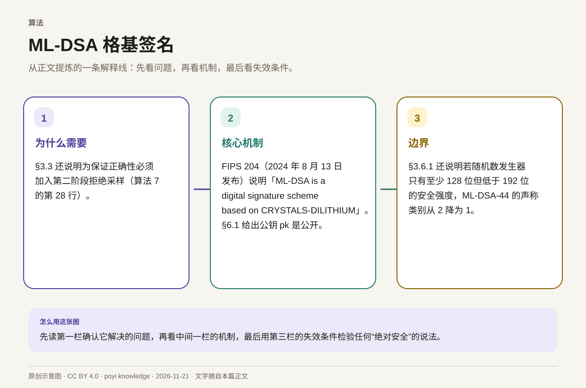
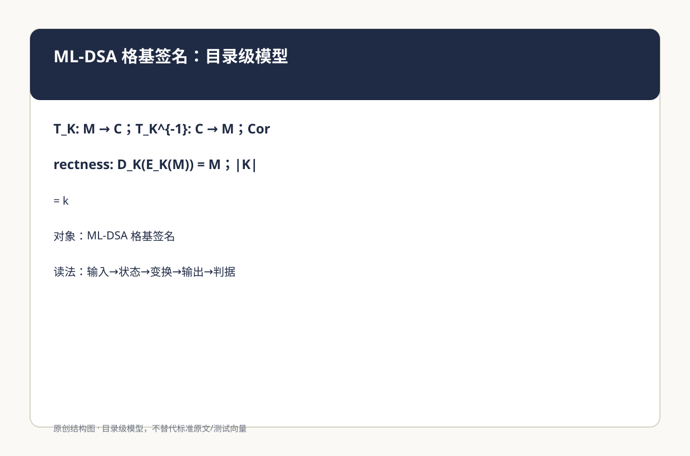

原理与机制
算法：ML-DSA 格基签名（Module-Lattice-Based Digital Signature Standard）。FIPS 204（2024 年 8 月 13 日发布）说明「ML-DSA is a digital signature scheme based on CRYSTALS-DILITHIUM」。§6.1 给出公钥 pk 是公开随机种子与压缩多项式向量 t1 的字节编码：t1 由未压缩公钥多项式 t 的每个系数丢弃最低 d 位得到，而 t = As1 + s2；同节给出私钥 sk 是公开随机种子、签名时使用的私有随机种子、公钥的 64 字节哈希、秘密多项式向量 s1 与 s2，以及编码 t 每个系数最低 d 位的多项式向量 t0 的字节编码；该节还指出实现可以只保存 32 字节种子再重建私钥其余部分。

为什么重要
标准写明「The ML-DSA scheme uses the Fiat-Shamir With Aborts construction」。为纠正偏差，the signer applies rejection sampling to z; if coefficients of z fall outside of a specified range, the signing process is aborted，签名的主要部分就是这样一个拒绝采样循环，每轮要么产出有效签名，要么产出「an invalid signature whose release would leak information about the private key」；§3.3 还说明为保证正确性必须加入第二阶段拒绝采样（算法 7 的第 28 行）。
应用与实例
参数集缩写为 ML-DSA-44、ML-DSA-65 与 ML-DSA-87，the numerical suffix refers to the dimension of the matrix A，例如 ML-DSA-65 的 A 是 6×5 矩阵；三者分别声称处于安全强度类别 2、3、5。

边界与攻击面
签名随机性是主要失效点：For ML-DSA to be secure, the signer's commitment value y must not be used to sign more than one message, and it must not be easily guessed by an attacker.This requires randomness.标准指出新鲜随机有助于缓解侧信道攻击，而确定性变体「the lack of randomness in the deterministic variant makes the risk of side-channel attacks (particularly fault attacks) more difficult to mitigate.Therefore, this variant should not be used on platforms where side-channel attacks are a concern and where they cannot be otherwise mitigated」。§3.6.1 还说明若随机数发生器只有至少 128 位但低于 192 位的安全强度，ML-DSA-44 的声称类别从 2 降为 1。
历史与背景
NIST IR 8547（2026 年 10 月）记录 FIPS 204 与 205 各规定量子抗性数字签名方案，并在 §2.1.1 说明 ML-DSA 源自 CRYSTALS-Dilithium 提交；§4 的时间线要求政府最高敏感系统在 2030 年 12 月 31 日前完成密钥建立的后量子迁移，并在 2031 年 12 月 31 日前为数字签名采用后量子密码。
技术参数与复算边界
该条目的形式模型是 (s=k^{-1}\big(H(m)+r d\big)\bmod n)。输入：输入：ML-DSA 格基签名的公开参数、密钥/随机数与消息；变量说明：k 一次性随机数，r 为承诺点横坐标，d 私钥，n 子群阶。 预期输出：按 ML-DSA 格基签名 的规范执行后得到可验证的输出或可比较的优势界。 复算必须给出输入、步骤、输出和单位；示例只演示流程，不替代标准测试向量。
复杂度由密钥长度、分组/状态规模、轮数、随机数质量和敌手模型共同决定；参数越界、版本差异与实现侧信道都可能使公式结论失效。已登记限制：该条目只给出形式模型与可复算步骤，不声称已完成生产实现、侧信道认证或第三方安全评估。
与 模块格基数字签名标准（FIPS 204） 的关系用于定位阅读路线，不表示同一实体。
逐步示例与核验
形式模型与复算步骤
[s=k^{-1}\big(H(m)+r d\big)\bmod n]
ML-DSA 格基签名的公开参数、密钥/随机数与消息；变量说明：k 一次性随机数，r 为承诺点横坐标，d 私钥，n 子群阶。1.选择随机 k，计算 R=kG 与 r。2.计算 s=k^{-1}(H(m)+rd) mod n。3.输出 (r,s)，验证者检查签名方程。边界：公式只覆盖已登记的参数与假设；参数取值、标准版本和实现细节仍以来源为准。
参考出处
- Wikipedia search entry for ML-DSA 格基签名. https://zh.wikipedia.org/w/index.php?search=ML-DSA%20%E6%A0%BC%E5%9F%BA%E7%AD%BE%E5%90%8D
- Handbook of Applied Cryptography (Menezes, van Oorschot, Vanstone). https://www.cacr.math.uwaterloo.ca/hac/
- NIST FIPS 204: ML-DSA. https://csrc.nist.gov/pubs/fips/204/final